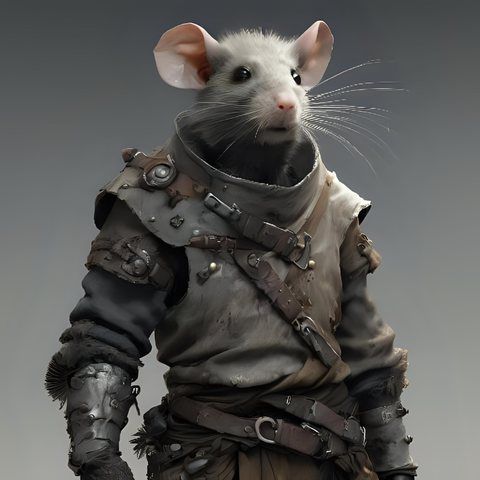

Carognet, rat-garou


- Rat-garou au service du Voïvode Brancovan, dans la maison du « Goulot des Tourelles » et ses sous-sols. Toujours avec Musard.
- Sous forme humaine : gringalet chétif au nez pointu, petite moustache clairsemée. Dans les sous-sols : petit humanoïde velu à tête et queue de rat. Hardes crasseuses et gambison renforcé de métal.
- Guerrier réputé et l'un des chefs du clan des Terres-Rases (Miteux). Rusé et retors. S'entend bien avec Arioald.
- Depuis leur arrivée, les voisins de la rue des Tourelles voient plus de rats.